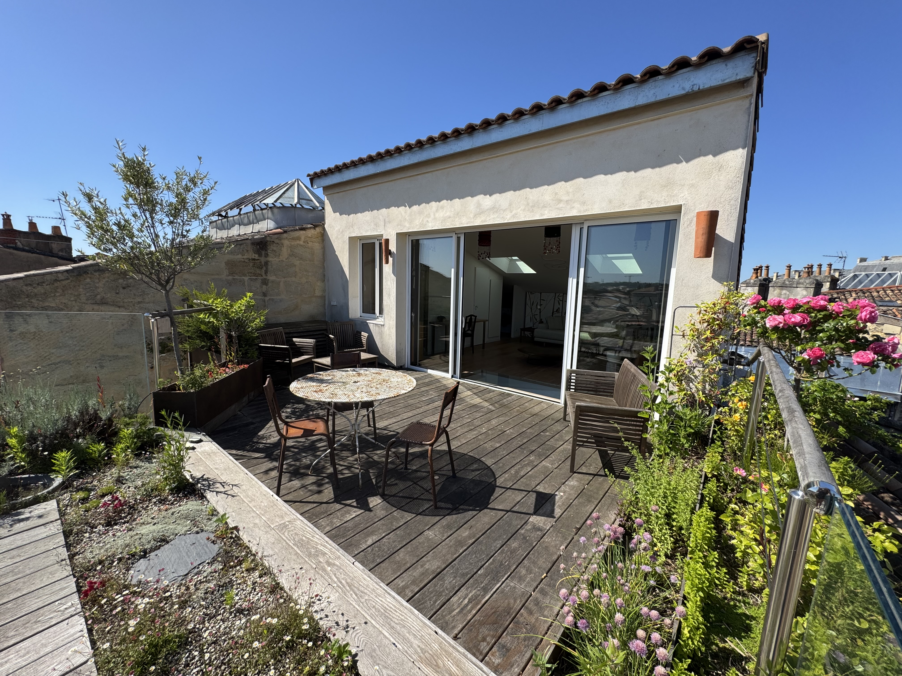
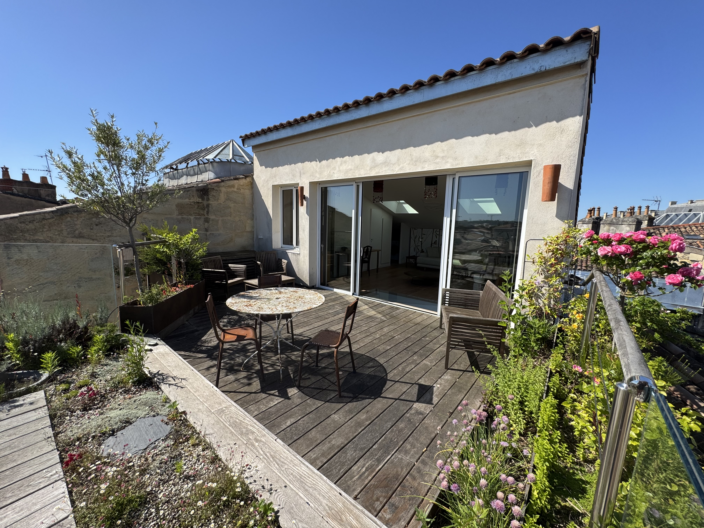

À propos de l’appartement
L’appartement se trouve au 62 boulevard de Magenta, à proximité des gares de l’Est et du Nord, dans un quartier vivant, bien desservi en transports, restaurants et commerces.
Checkin-Concierge gère votre séjour de l’arrivée au départ : accès autonome, assistance pour les voyageurs, gestion des éventuels petits soucis dans le logement, etc.
- Wi-Fi haut débit (identifiants disponibles sur votre plateforme de réservation)
- Check-in et check-out en autonomie via le service keynest situé au 87 Bd de Strasbourg, 75010 Paris
- Appartement entièrement équipé pour votre séjours
Comment allumer les lumières de l’appartement
L’éclairage de l’appartement a été conçu pour offrir une ambiance tamisée et apaisante,
fidèle aux valeurs portées par Shamengo. Chaque point lumineux, du salon à la cuisine, a été pensé pour
favoriser le calme, la douceur et la sérénité, grâce à un jeu subtil d’éclairages indirects et de lampes d’appoint.
Nous vous invitons à profiter de cette atmosphère lumineuse légère, idéale pour se détendre et se ressourcer durant votre séjour.
Pour vous simplifier la prise en main de l’appartement, nous avons préparé une courte vidéo qui
vous montre comment fonctionnent :
- Les éclairages du salon (plafonnier, lampes d’appoint)
- Les lumières de la cuisine via les variateurs d'intensitée lumineuse
- Les éclairages des chambres et de la salle de bain
💡 Astuce : pensez à éteindre les lumières en quittant le logement, pour des raisons écologiques et pour le confort des voisins.
Tri sélectif & gestion des déchets
Merci de nous aider à réduire l’empreinte environnementale du logement en respectant le tri sélectif. Dans la cuisine, vous trouverez plusieurs contenants distincts :
Déchets organiques
Épluchures de fruits et légumes, marc de café, sachets de thé, petits restes alimentaires sans emballage. Utilisez le bac identifié “Déchets organiques”.
Déchets ménagers
Tout ce qui ne se recycle pas : mouchoirs, serviettes en papier, emballages sales, etc. Utilisez la poubelle “Déchets ménagers”.
Plastique & emballages
Bouteilles en plastique, briques alimentaires, boîtes en carton propres, canettes… Merci de les vider avant de les jeter. Utilisez la poubelle “Plastique / Emballages”.
Verre
Bouteilles en verre, pots et bocaux (sans couvercle métallique). Le verre ne va jamais dans les poubelles classiques. Déposez-le dans le contenant “Verre” prévu dans l’appartement ou dans les bornes de tri dans la rue.
♻️ Merci ! Votre geste participe directement à la réduction des déchets et à la valorisation des matières recyclables.
Les propriétaires & Shamengo
Les propriétaires de l’appartement sont engagés dans une association appelée Shamengo. L’École Shamengo développe des modules pédagogiques dédiés à la transition écologique et sociale, en s’appuyant sur des innovations durables et sur le partage de “pionniers du nouveau monde”.
Concrètement, Shamengo met en lumière des femmes et des hommes qui inventent de nouvelles façons de :
- Préserver la planète
- Créer dans l’éthique
- S’engager pour les autres
- Prendre soin de soi autrement
En séjournant ici, vous soutenez indirectement ces initiatives positives qui visent à rendre nos modes de vie plus responsables.
🌍 Pour en savoir plus : Découvrir Shamengo
Découvrir Paris & idées d’activités
Pour préparer votre séjour, retrouver les grands classiques ou dénicher des idées plus originales, nous vous recommandons de consulter le site officiel de l’Office du Tourisme de Paris :
🏛️ Paris je t’aime – Office du Tourisme & des Congrès de Paris
Vous y trouverez :
- Les monuments incontournables (Tour Eiffel, Louvre, Arc de Triomphe, etc.)
- Les musées, expositions et spectacles du moment
- Les balades, croisières, visites guidées et activités en famille
✅ Astuce : pensez à réserver en ligne pour éviter les files d’attente sur les sites les plus fréquentés.
Carte & points d’intérêt
L’appartement est idéalement situé au 62 boulevard de Magenta, 75010 Paris, à quelques minutes à pied des gares de l’Est et du Nord, et très bien connecté au reste de la ville en métro et en bus.
Quelques grands sites parisiens à explorer durant votre séjour :
Pour manger dans le quartier, vous pouvez également explorer :
Découvrez aussi notre appartement à Bordeaux
Après Paris, vivez la même expérience sereine, élégante et responsable dans notre appartement situé en plein cœur de Bordeaux. Un espace pensé pour le confort, la lumière douce et la détente.

 
